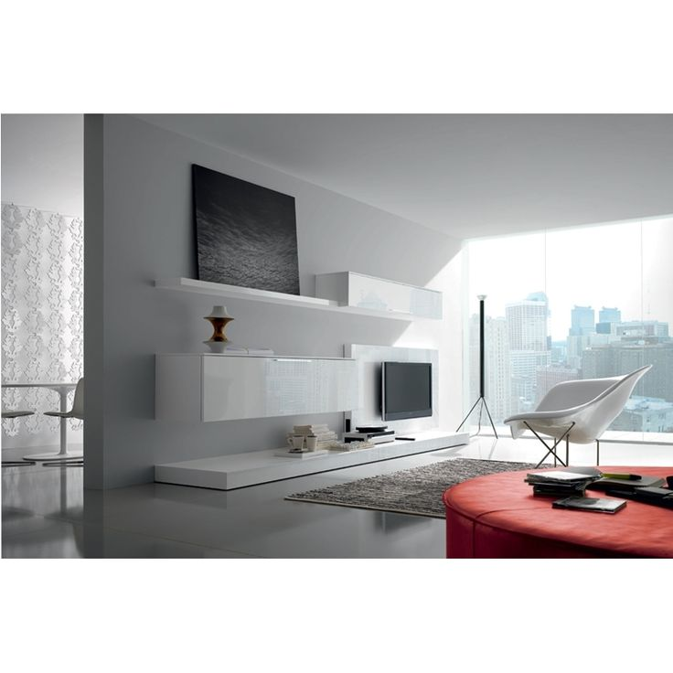
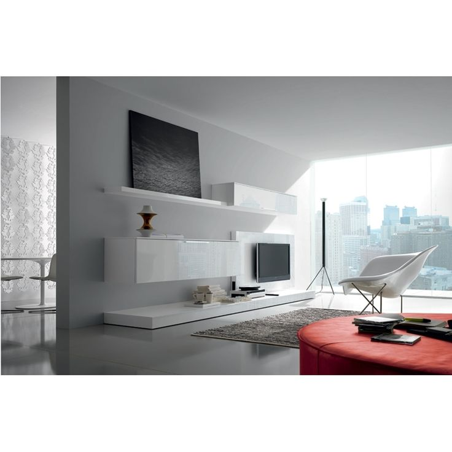

Sufragerie IKEA - IKEA
2020.09.21 00:38
Treci la conţinutul principal IKEA Produse Camere Noutăţi Idei Oferte speciale IKEA Caută Produse Camere Noutăţi Idei Oferte speciale Profilul meu Urmărește comanda IKEA Family IKEA for Business Livrare Despre magazin Contactează-ne Produse Noutăţi Mobilier Soluţii depozitare Bebeluşi şi copii Mobilier pentru exterior Paturi şi saltele Bucătării şi electrocasnice Accesorii pentru bucătărie şi veselă Produse pentru baie Textile Covoare şi covoraşe Corpuri de iluminat Decoraţiuni Plante şi ghivece Accesorii pentru curățenie și rufe Amenajarea locuinţei Electronice pentru casă Siguranța Mâncare şi băutură Animale de companie Timp liber şi produse pentru siguranţă IKEA home smart Pentru vară Camere Dormitor Camera de zi Bucătărie Sufragerie Camera copiilor Baie Biroul de acasă Hol Exterior Vizualizate recent Schimbă țara Acasă Camere Sufragerie
Sufragerie
Scaune sufragerie Mese pentru sufragerie Seturi sufragerie Bufete şi mese consolă Mese și scaune pentru bar Taburete & bănciSufrageria ta’nu presupune doar luatul mesei; astăzi este locul’unde poți face orice dorești, de la efectuarea temelor la joacă. Așa că vino să vezi tot ce ai nevoie pentru realizarea unui spațiu pentru luat masa, pentru relaxare, pentru distracție sau pentru muncă - toate în locul unde-ți petreci timpul.
Preferatele noastre
Skip listing RÖNNINGE Masă extensibilă 155/210x90x75 cm 999 lei INGOLF Scaun 179 lei (80) Mai multe opțiuni INGATORP Masă extensibilă 110/155 cm 1.299 lei (96) Mai multe opțiuni JOKKMOKK Masă + 4 scaune 529 lei (50) TERJE Scaun pliant 59 , 90 lei (97) Mai multe opțiuni EKEDALEN Scaun 199 lei (11) Nou INGOLF Scaun 229 lei (80) Mai multe opțiuni MELLTORP Masă 149 leiUn stil clasic, un preţ imbatabil şi rezistenţă
A fost important pentru noi să realizăm o masă pentru oameni care se află în diferite situaţii. Am lucrat cu detaliile, de exemplu spaţiul dintre cadru şi blat, pentru a face acest design unic.
INGATORP Masă extensibilă 1.299 leiSuprafaţă lăcuită
Dimensiunile mesei se adaptează uşor şi rapid nevoilor tale. Cu extensia suplimentară de sub tăblie masa se extinde pentru 4-6 persoane. Funcţie de blocare mascată pentru a preveni crearea de spaţiu între blat şi extensie şi pentru a fixa la locul său extensia.
Extensia suplimentară se poate depozita sub blat.
Vezi toate mese pentru sufragerieIdei IKEA
Explorează ideile pentru amenajarea locuinţei, inspiră-te şi creează!
Aranjează masa pentru vară
Organizează o petrecere veselă
Aranjament de iarnă pentru masă
Un aranjament de masă simplu dar frumos
5 sfaturi esenţiale pentru o masă de sărbătoare
Găseşte stilul care te defineşte.
Idei IKEA | SufragerieLivrare
Livare pentru orice fel volum de cumpărturi, mare sau mic.
Despre livrareAsamblare mobilier
Echipa noastră poate asambla mobilierul IKEA la tine acasă.
Despre asamblarePlanificare online
Planifică de acasă, ajutat de un specialist IKEA.
Programare aiciModalităţi de plată
Finanţare adaptată nevoilor tale, la fel ca mobilierul.
Click & Collect
Comandă online, ridică din magazin/punctele de colectare.
Înapoi la început PartajeazăPinterest Facebook Twitter Copiază link-ul
- Mobila Living - Alege Mobila de sufragerie - eMAG.ro
- Mobilă living și sufragerie | FAVI.ro
- Mobilă living - DEDEMAN - Dedicat planurilor tale
- Sufragerie | H&M RO
- Mobilier Sufragerie - Artmobel
- Mobila living | Mobila sufragerie - Vezi Oferta - Elvila.ro
- Canapele extensibile si fixe • living •2/3 locuri ᐈ Homelux
- Articole pentru Sufragerie| Miniprix
- Biblioteci Living » Modele Moderne pentru Sufragerie ...
- Sufragerie IKEA - IKEA
- Mobila Living - Alege Mobila de sufragerie - eMAG.ro
Mobilier / Mobila Sufragerie -mobila stil - mobila arta - cu un design fluid in linii curbe din lemn masiv de esenta tare de fag innobilat cu furnire estetice de nuc, paltin, trandafir, radacina de nuc si mahon combinat cu elemente sculptate manual, in finisaj nuc cu sculptura si intarsie.
- Mobilă living și sufragerie | FAVI.ro
Găsește mobilă cameră de zi și sufragerie pe placul tău, pentru livinguri mai mici sau mai mari.
- Mobilă living - DEDEMAN - Dedicat planurilor tale
Sufragerie; Bucătărie; Baie; Camera copiilor; Classic Collection; Cumpărături sortate după produs. Cumpărături sortate după produs; Vizualizaţi tot; Perne și fețe de pernă; Aşternuturi pat; Decoraţiuni; Îmbrăcăminte de casă; Accesorii pentru baie și duș; Soluții de depozitare și organizatoare; Pături; Perdele; Covoare ...
- Sufragerie | H&M RO
Descoperiti gama disponibila de mobila living si sufragerie. Alegeti o biblioteca standard sau puneti-va la incercare creativitatea cu mobila de living modulara, disponibila intr-o gama variata de culori.Incepeti cautarea cu alegerile populare sau verificati gama de usi de interior.
- Mobilier Sufragerie - Artmobel
SUFRAGERÍE, sufragerii, s. f. 1. Cameră în care se servește masa și care este mobilată cu mobilele necesare pentru aceasta. Cînd intrarăm în sufragerie, însetați, plini de foame și de frig, ne izbi deodată lumina vie a lumînărilor.
- Mobila living | Mobila sufragerie - Vezi Oferta - Elvila.ro
Principalele piese de mobilă de sufragerie care nu trebuie să îți lipsească sunt: o canapea încăpătoare, din materiale de calitate, rezistentă în timp și ușor de întreținut, un mic fotoliu în cazul în care îți face plăcere să citești, o masă de cafea și o mică bibliotecă sau un dulap.
- Canapele extensibile si fixe • living •2/3 locuri ᐈ Homelux
Mobilier living, sufragerie Living comanda simulator 3D in magazine Biblioteci pentru sufragerie Cuiere si mic mobilier Clasic & country Camere de zi & sufragerii Vitrine, argintare si dulapuri Mese, masute si comode TV Bufet, veselar Mobila de dormitor Mobilier de dormitor Dormitoare set Paturi Dulapuri Dressing pe comanda simulator 3D in ...
- Articole pentru Sufragerie| Miniprix
Este momentul să iei masa? Avem multe tipuri de mobilier pentru sufragerie din care poți alege. Vină să vezi seturi de masă, scaune și multe posibilități de combinare a acestora, indiferent de spațiul de care dispui.
- Biblioteci Living » Modele Moderne pentru Sufragerie ...
Deși inițial, biblioteca era o piesă de mobilier concepută doar pentru cărți, noile designuri sunt adaptate la modul de viață al omului contemporan. Pe lângă rafturile deschise pentru etalarea cărților sau altor obiecte decorative, ea oferă și spații închise (tip vitrină sau dulap), sertare încăpătoare, dar și un spațiu liber, proiectat special pentru televizor.
- Sufragerie IKEA - IKEA
DESCOPERĂ O GAMĂ VARIATĂ DE MOBILĂ PENTRU LIVING ȘI CAMERA DE ZI Îți oferim o gamă variată de mobilier pentru living și camera de zi - canapele, canapele extensibile, măsuțe de cafea, fotolii, tabureți, pufuri şi comode TV - în diverse stiluri și materiale care păstrează amprenta rădăcinilor noastre scandinave Fie că preferi un stil clasic, rustic sau unul modern, în ...
Mobilier / Mobila Sufragerie -mobila stil - mobila arta - cu un design fluid in linii curbe din lemn masiv de esenta tare de fag innobilat cu furnire estetice de nuc, paltin, trandafir, radacina de nuc si mahon combinat cu elemente sculptate manual, in finisaj nuc cu sculptura si intarsie.
Găsește mobilă cameră de zi și sufragerie pe placul tău, pentru livinguri mai mici sau mai mari.
Sufragerie; Bucătărie; Baie; Camera copiilor; Classic Collection; Cumpărături sortate după produs. Cumpărături sortate după produs; Vizualizaţi tot; Perne și fețe de pernă; Aşternuturi pat; Decoraţiuni; Îmbrăcăminte de casă; Accesorii pentru baie și duș; Soluții de depozitare și organizatoare; Pături; Perdele; Covoare ...
Descoperiti gama disponibila de mobila living si sufragerie. Alegeti o biblioteca standard sau puneti-va la incercare creativitatea cu mobila de living modulara, disponibila intr-o gama variata de culori.Incepeti cautarea cu alegerile populare sau verificati gama de usi de interior.
SUFRAGERÍE, sufragerii, s. f. 1. Cameră în care se servește masa și care este mobilată cu mobilele necesare pentru aceasta. Cînd intrarăm în sufragerie, însetați, plini de foame și de frig, ne izbi deodată lumina vie a lumînărilor.
Principalele piese de mobilă de sufragerie care nu trebuie să îți lipsească sunt: o canapea încăpătoare, din materiale de calitate, rezistentă în timp și ușor de întreținut, un mic fotoliu în cazul în care îți face plăcere să citești, o masă de cafea și o mică bibliotecă sau un dulap.
Mobilier living, sufragerie Living comanda simulator 3D in magazine Biblioteci pentru sufragerie Cuiere si mic mobilier Clasic & country Camere de zi & sufragerii Vitrine, argintare si dulapuri Mese, masute si comode TV Bufet, veselar Mobila de dormitor Mobilier de dormitor Dormitoare set Paturi Dulapuri Dressing pe comanda simulator 3D in ...
Este momentul să iei masa? Avem multe tipuri de mobilier pentru sufragerie din care poți alege. Vină să vezi seturi de masă, scaune și multe posibilități de combinare a acestora, indiferent de spațiul de care dispui.
Deși inițial, biblioteca era o piesă de mobilier concepută doar pentru cărți, noile designuri sunt adaptate la modul de viață al omului contemporan. Pe lângă rafturile deschise pentru etalarea cărților sau altor obiecte decorative, ea oferă și spații închise (tip vitrină sau dulap), sertare încăpătoare, dar și un spațiu liber, proiectat special pentru televizor.
DESCOPERĂ O GAMĂ VARIATĂ DE MOBILĂ PENTRU LIVING ȘI CAMERA DE ZI Îți oferim o gamă variată de mobilier pentru living și camera de zi - canapele, canapele extensibile, măsuțe de cafea, fotolii, tabureți, pufuri şi comode TV - în diverse stiluri și materiale care păstrează amprenta rădăcinilor noastre scandinave Fie că preferi un stil clasic, rustic sau unul modern, în ...
 
